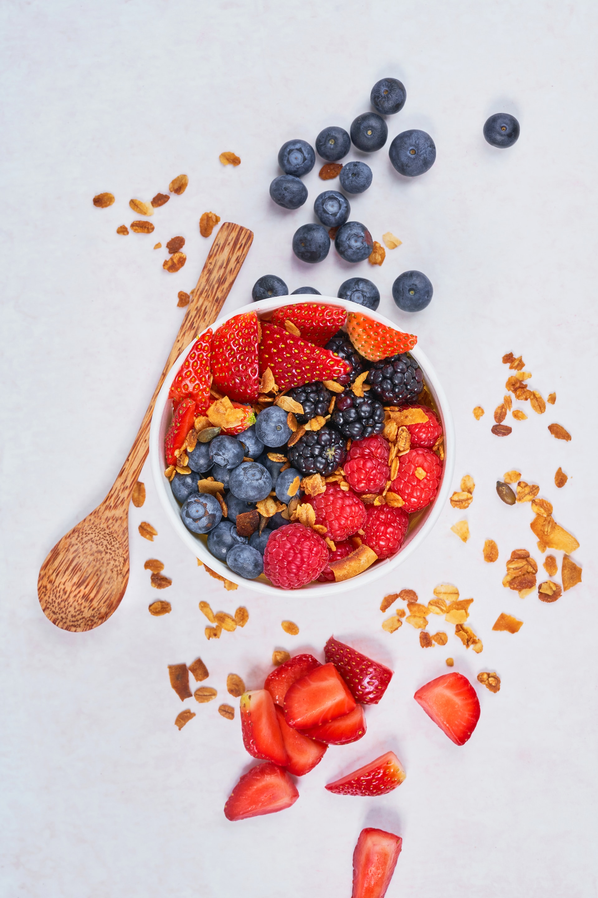
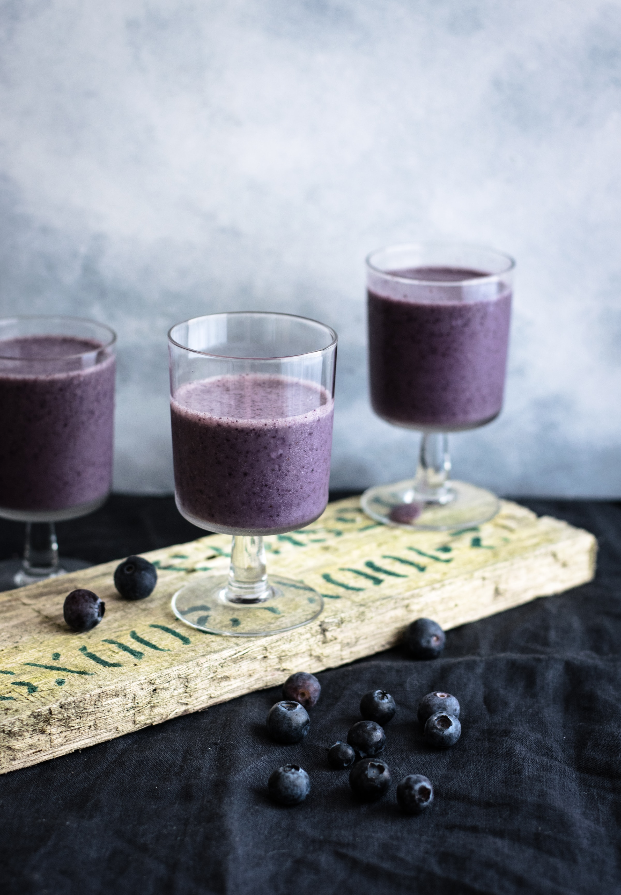
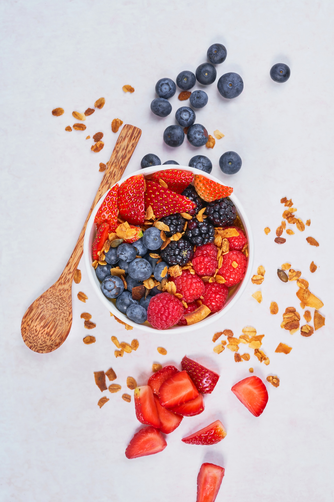
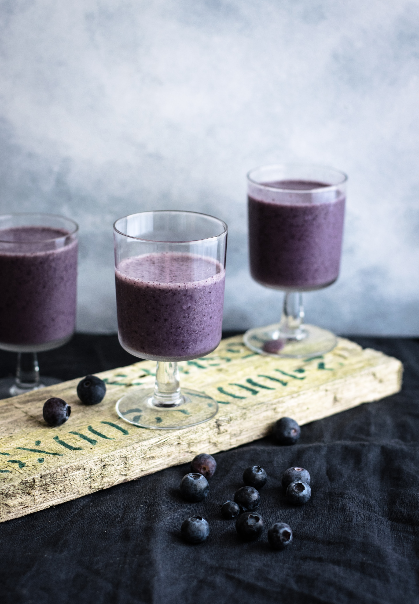

Açaí
O açaí é um fruto brasileiro cultivado predominantemente na região amazônica. Com cor escura, que vai do roxo ao preto, o fruto arredondado nasce em cachos e, na maioria das vezes, em locais com solos mais úmidos ou alagados. A palmeira do açaí pode atingir mais de 20 metros de altura, e o fruto é formado em cachos. Cada palmeira costuma ter cerca de quatro cachos por ano e cada um deles pode produzir uma quantidade aproximada de três a seis quilos do fruto.
Cupuaçu
O cupuaçu é fruto do cupuaçuzeiro (Theobroma grandiflorum), uma árvore típica da Amazônia brasileira, de família próxima à do cacaueiro. O cupuaçuzeiro pode medir entre 10 e 15m de altura e necessita de um solo firme, fértil e com boa retenção de água para se desenvolver. A polpa e o caroço são as partes consumíveis. Com a polpa, muito rica em proteínas, carbohidratos, fibras e enzimas, se preparam sucos, refrescos, cremes, compotas, doces, sorvetes, biscoitos, licores e yogurtes. A semente é utilizada na produção do cupulate (chocolate feito do caroço da fruta).